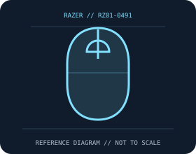

[ MICE AND TRACKBALLS // IDENTIFIED COMPONENT ]
Razer Viper V3 HyperSpeed Wireless Mouse
Right-handed, AA-powered HyperSpeed mouse with Focus Pro 30K optical tracking and second-generation mechanical switches.

MODEL IDENTIFICATION: RZ01-0491. Confirm printed identifiers, revision, region, and included accessories before repair or compatibility claims.
Model specifications
| Catalog leaf | Mice and trackballs |
|---|---|
| Exact model / identifier | RZ01-0491 |
| Sensor and switches | Focus Pro 30K optical sensor, up to 30,000 DPI, 750 IPS and 70 g. Native HyperSpeed polling is 1,000 Hz; up to 4,000 Hz requires a separately sold compatible HyperPolling Wireless Dongle. Gen-2 mechanical mouse switches. |
| Wired/wireless interface; polling and DPI | 2.4 GHz Razer HyperSpeed USB-A receiver only; not a Bluetooth or wired-use model. Razer Synapse is used for settings and supported firmware features. |
| Dimensions and weight | 127.1 × 63.9 × 39.9 mm; about 82 g with AA cell. |
| Host and driver compatibility | Basic USB HID pointing requires a compatible USB host; Synapse customization and polling options require supported Windows software and compatible dongle/firmware. |
| Power and battery | One replaceable AA battery; up to 280 hours quoted at 1,000 Hz. Higher polling and use patterns reduce battery life; no internal rechargeable battery. |
| Revision and SKU caveats | Confirm RZ01-0491 and included receiver. HyperPolling is an optional accessory and does not make the standard receiver a 4 kHz device; regional suffix, firmware, software, and battery condition affect behavior. |
Preservation and service
Keep the receiver, cable, battery cover, and included accessories with the identified mouse. Clean optical apertures and trackball contacts without introducing liquid; record host OS, driver/firmware version, connection mode, and battery condition during tests.
Published maximum DPI, polling, click-life, and runtime values are manufacturer figures under specific test conditions, not a guarantee of individual-unit performance.
Manufacturer sources
- Razer Viper V3 HyperSpeed product pageManufacturer product or support documentation; confirm the exact SKU, region, and revision against the device label.
- Razer Viper V3 HyperSpeed supportManufacturer product or support documentation; confirm the exact SKU, region, and revision against the device label.
Manufacturer documentation changes over time; retain the applicable manual and revision with the physical equipment record.